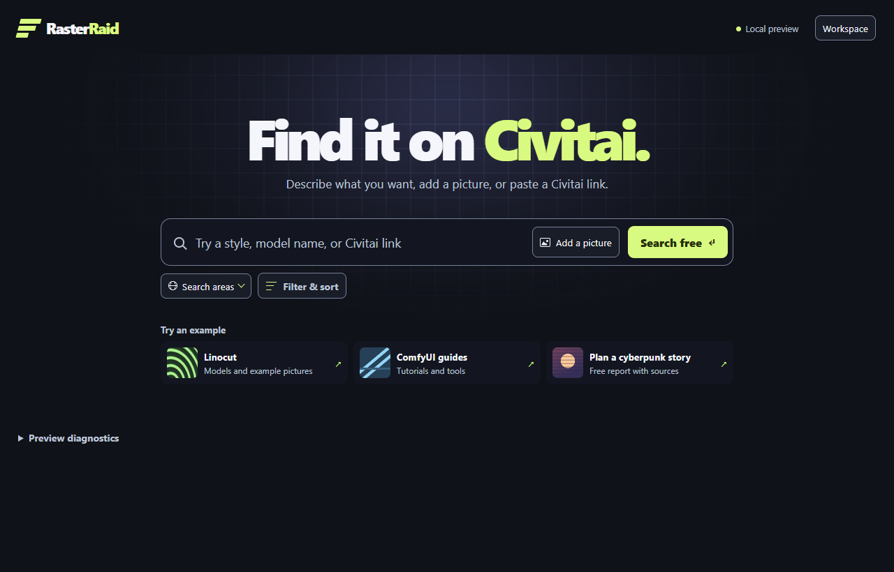

Civitai search and research
Find what you came for.
Search models, pictures, video, music and guides in one place. Follow the examples back to the exact releases and people behind them.
Developer preview 0.0.4 RasterRaid Inside Civitai

Start with what you have
Bring sources together.
Build a free report, compare exact releases and save your findings. Get a live price for a closer look when it’s useful.